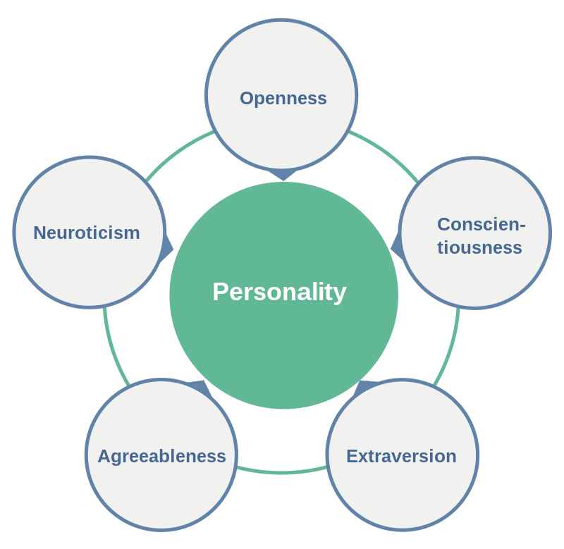
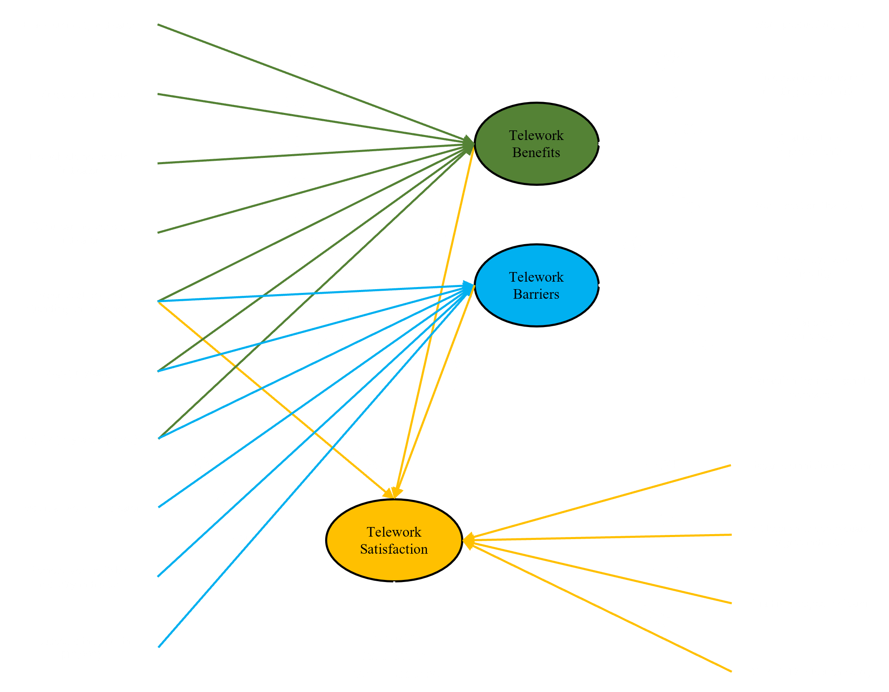

flowchart LR LV1((Latent Variable)) --> I1[Indicator 1] LV1 --> I2[Indicator 2] LV1 --> I3[Indicator 3] LV1 --> I4[Indicator 4] LV1 --> I5[Indicator 5] LV1 --> I6[Indicator 6]
Hidden World of Latent Variables
A tutorial on latent factor and latent class modeing in R
Divyakant Tahlyan
Northwestern University Transportation Center
Oct 12, 2023
What is a latent variable?
- Origin: lateo - “lie hidden”
- latent variables are unseeable (by definition), what you see is called the “manifest” / “indicator” variable
- latent variables could have another underlying dimension
- GRE scores: Verbal section, Quantitative section, Writing section
- life satisfaction: could be divided into health satisfaction, social relationship satisfaction etc.
Latent variables are everywhere
- Economics
- Quality of Life
- Credit ‘Worthiness’
- Intelligence and Test Scores
- GRE, SAT
- IQ
- Social Sciences
- Social Belonging
- Social Capital
- Field of medicine
- Disease diagnosis
- Psychiatry
Why do we care about latent variable?
- measuring the unseeable
- stress, experience, satisfaction, attitudes, privilege, perception, support, intelligence
- dimensionality reduction
- models become unmanageable with increasing number of variables
- work with less variables and retain ~ same information
- better behavioral interpretation in modeling
- observed variables are manifestation of attitudes, perceptions etc.
- including manifest variables as covariates may lead to endogeneity
- understanding relationship between different unseeables; or between unseeables and seeables
- social support and longevity
- accessibility and social upward mobility
- safety perception and transit use
Taxonomy of latent variable modeling
Types of latent variable: Factors, classes
Types of latent variable modeling paradigms: Exploratory, Confirmatory
| Manifest Variable | ||
| Latent Variable | Continuous | Categorical |
| Continuous | Factor Analysis | Item Response Theory |
| Categorical | Latent Profile Analysis | Latent Class Analysis |
Typical model representation
Goals for this tutorial
- Exploratory Factor Analysis using stats package in R
- Big Five Personality Traits
- Confirmatory Factor Analysis and SEM using lavaan package in R
- Big Five Personality Traits
- Latent Class Analysis using poLCA package in R
- GPA and chronic cheating data
- Understand codes for latent factor / class model used in three recent publications
- Social capital dimensions and travel behavior
- Perceived barriers to and benefits of telework and their relationship with telework satisfaction
- Perceived impact of remote work on various work aspects
Exploratory Factor Analysis
- factors are normally distributed random variables
- Goal: explain covariance among observed variable as a linear function of a set of factors
- Total variance: common (explained by factors) + unique (to an indicator)
- indicators are function of factors and measurement error i.e. factors cause observed indicators
\[ I_1 = \beta_{11}(F_1) + \beta_{12}(F_2) + \epsilon_1 \] \[ I_2 = \beta_{21}(F_1) + \beta_{22}(F_2) + \epsilon_2 \] \[ I_3 = \beta_{31}(F_1) + \beta_{32}(F_2) + \epsilon_3 \]
- number of factors in the data is not known a priori - decide using amount of variance explained by each factor
- \(\beta\) parameters also called factor loadings
- eigenvalue: squared sum of \(\beta\) in each column
Confirmatory Factor Analysis and SEM
- assumes we have a factor in mind and know it’s indicators
- usually theory driven
- Goal: test different hypotheses
- things we can do:
- \(I_1 = \beta_1F_1 + \epsilon_1\): measurement model
- \(F_1 = \beta_5F_2 + \beta_2X_1 + \epsilon_2\) : structural model
- \(y_1 = \beta_3X_2 + \beta_4F_1 + \epsilon_3\): distal outcome model
- Popular example from transportation researchL ICLV
Big Five Personality Traits Dataset
- agreeableness (friendly/compassionate vs. critical/rational)
- conscientiousness (efficient/organized vs. extravagant/careless)
- extraversion (outgoing/energetic vs. solitary/reserved)
- neuroticism (sensitive/nervous vs. resilient/confident)
- openness to experience (inventive/curious vs. consistent/cautious)

Big Five Personality Traits Dataset
- agreeableness
- A1 Am indifferent to the feelings of others.
- A2 Inquire about others’ well-being.
- A3 Know how to comfort others.
- A4 Love children.
- A5 Make people feel at ease.
- conscientiousness
- C1 Am exacting in my work.
- C2 Continue until everything is perfect.
- C3 Do things according to a plan.
- C4 Do things in a half-way manner.
- C5 Waste my time.
- extraversion
- E1 Don’t talk a lot.
- E2 Find it difficult to approach others.
- E3 Know how to captivate people
- E4 Make friends easily.
- E5 Take charge.
Big Five Personality Traits Dataset
- neuroticism
- N1 Get angry easily.
- N2 Get irritated easily.
- N3 Have frequent mood swings.
- N4 Often feel blue.
- N5 Panic easily.
- openness to experience
- O1 Am full of ideas.
- O2 Avoid difficult reading material.
- O3 Carry the conversation to a higher level.
- O4 Spend time reflecting on things.
- O5 Will not probe deeply into a subject.
Latent Class Analysis
- classes are categorical random variables- multinomial distributed
- Goal: determine classes of behavior in data
- With 10 indicators and two possible responses (yes/no), there are \(2^{10}=1024\) response possibilities - prohibitively large to utilize this information or even to understand what is going on in the data
- assuming there are \(j\) classes in the latent variable \(c\) and \(K\) indicators with yes/no response
- model gives us two set of parameters:
- \(\gamma_{c_j}\): percentage of respondents in \(c_j\)
- \(\rho_{u_k | c_j}\): probability of responding yes or no conditional on class membership
- determine \(j\) using bayesian information criteria (BIC)
\[ P(Y=y | c = c_j) = \prod_{k=1}^{K}\prod_{u_k = 1}^{U} \rho_{u_k | c_j}^{I(y_{u_k} = r_{u_k})} \]
GPA and chronic cheating dataset
Four indicators (1 - No; 2 = Yes)
- have ever lied to avoid taking an exam (LIEEXAM)
- have lied to avoid handing a term paper in on time (LIEPAPER)
- purchased a term paper to hand in as their own or had obtained a copy of an exam prior to taking the exam (FRAUD)
- copied answers during an exam from someone sitting near to them (COPYEXAM)
Also available: GPA of students on a 5-point scale: (1) 2.99 or less; (2) 3.00-3.25; (3) 3.26-3.50; (4) 3.51-3.75; (5) 3.76-4.00
319 observations
Example dataset in poLCA package. Source: Dayton, C. Mitchell. 1998. Latent Class Scaling Analysis. Thousand Oaks, CA: SAGE Publications.
Example 1: Understanding relationship between social capital dimensions and travel behavior

Example 2: Understanding factors impacting telework satisfaction during the pandemic

Example 3: Remote work’s impact on various work aspects
